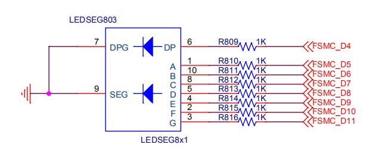

7. 点亮数码管¶
本节课利用已经学习的LED知识去控制一个8位数码管。
本节的原理比较简单。不需要多少时间讲。更多时间是跟大家一起编码调试，从中学习一些编码思路和学习方法。
7.1. 什么是数码管¶
数码管是什么？下图这个就是一个数码管

从硬件上个看，起始就是8个LED。8个LED应该有16个引脚，但是数码管上只有10个引脚。为什么呢？
请看下图！

1个LED有两个引脚，要控制LED，1个引脚接控制信号，另外一个引脚接电源或者地（高驱动或低驱动，下同）。
那么，当有8个LED，只需要8根IO口控制状态，其他IO全部接到地或者电源即可。
当用高驱动时，LED负极全部接到地，这种数码管就叫做共阴极数码管。
当用低电平驱动时，LED整机全部接到电源，这种数码管就叫做共阳极数码管。
数码管实物中，小数点LED通常单独引出两个引脚，由我们在电路图上连接在一起。
7.2. 原理图¶
从原理可知，控制数码管需要8根IO口。下图就是原理图。

IO口选择PE7—PE14，这8个IO口是连续的，方便代码控制。
共阴极数码管，所有负极接到地。整机通过一个限流电阻接到控制IO口。
7.3. 接口设计¶
什么是接口？
两件事物之间的交互通道叫做接口。
软件中，应用程序控制硬件用的函数，就是接口。
从上往下看，也就是用用户角度看硬件，用户想要什么功能？
从下往上看，硬件有什么功能？能提供什么功能？（注意二者区别）
我们还刚刚开始学编程，这些设计理念可以下了解，慢慢实践
一位数码管有什么功能？
首先，有8个LED可以点亮。
然后，8个数码管可以组成数字。
从用户角度看，我们用数码管做什么呢？通常我们需要的功能是显示数字，而不是点亮某个段。
所以，我们就定义数码管的功能是：显示数字
函数接口如下：
/*
定义一个seg_display
输入参数有2个，分别是char型的num，char型的dot
没有返回值。
*/
void seg_display(char num, char dot)
num就是要显示的数字：0~9
dot表示要不要点亮小数点
到此，我们编码前的学习和设计就完成了，下面开始实现功能。
7.4. 编码调试¶
第一步，点亮LED
这一步上一节调试LED时已经学过，代码如下：
/* 调用库函数RCC_APB2PeriphClockCmd 传入两个参数RCC_APB2Periph_GPIOD，ENABLE RCC_APB2Periph_GPIOD是一个宏定义， ENABLE是一个新定义的枚举类型FunctionalState */ RCC_APB2PeriphClockCmd(RCC_APB2Periph_GPIOD, ENABLE); RCC_APB2PeriphClockCmd(RCC_APB2Periph_GPIOE, ENABLE); GPIO_ResetBits(GPIOE, GPIO_Pin_7|GPIO_Pin_8|GPIO_Pin_9|GPIO_Pin_10|GPIO_Pin_11|GPIO_Pin_12|GPIO_Pin_13|GPIO_Pin_14); /* Configure PD0 and PD2 in output pushpull mode */ /* Configure PD0 and PD2 in output pushpull mode */ /*赋值给结构体变量GPIO_InitStructure的成员， 注意，GPIO_InitStructure是实体，所以用点， 如果是一个结构体指针，就用-> GPIO_InitStructure->GPIO_Pin */ GPIO_InitStructure.GPIO_Pin = GPIO_Pin_7|GPIO_Pin_8|GPIO_Pin_9|GPIO_Pin_10|GPIO_Pin_11|GPIO_Pin_12|GPIO_Pin_13|GPIO_Pin_14; GPIO_InitStructure.GPIO_Speed = GPIO_Speed_50MHz; GPIO_InitStructure.GPIO_Mode = GPIO_Mode_Out_PP; GPIO_Init(GPIOE, &GPIO_InitStructure); GPIO_SetBits(GPIOE, GPIO_Pin_7); GPIO_SetBits(GPIOE, GPIO_Pin_8); GPIO_SetBits(GPIOE, GPIO_Pin_9); GPIO_SetBits(GPIOE, GPIO_Pin_10); GPIO_SetBits(GPIOE, GPIO_Pin_11); GPIO_SetBits(GPIOE, GPIO_Pin_12); GPIO_SetBits(GPIOE, GPIO_Pin_13); GPIO_SetBits(GPIOE, GPIO_Pin_14);
几个关键点：
记得打开IO口时钟。
先设置状态，再配置IO口为输出。防止IO口配置完后LED闪一下。
然后调用GPIO_SetBits控制IO口。
用调试器一个一个LED数码管轮流测试，看是不是能点亮、熄灭。
为什么要一个一个调试？因为要防止硬件上IO口短路。
如果8个IO口一起控制亮灭，就无法知道IO口有没有短路。
用直接的方法实现接口
接口函数原型我们已经定义好
void seg_display(char num, char dot)
既然我们都会控制LED了，那么，就用控制LED的方法实现这个函数。
GPIO_ResetBits(GPIOE, GPIO_Pin_7|GPIO_Pin_8|GPIO_Pin_9|GPIO_Pin_10|GPIO_Pin_11|GPIO_Pin_12|GPIO_Pin_13|GPIO_Pin_14); if(dot == 1) { GPIO_SetBits(GPIOE, GPIO_Pin_7); } switch(num) { case 0: GPIO_SetBits(GPIOE, GPIO_Pin_8|GPIO_Pin_9|GPIO_Pin_10|GPIO_Pin_11|GPIO_Pin_12|GPIO_Pin_13); break; case 1: GPIO_SetBits(GPIOE, GPIO_Pin_9|GPIO_Pin_10); break; case 2: GPIO_SetBits(GPIOE, GPIO_Pin_8|GPIO_Pin_9|GPIO_Pin_11|GPIO_Pin_12|GPIO_Pin_14); break; case 3: GPIO_SetBits(GPIOE,GPIO_Pin_8|GPIO_Pin_9|GPIO_Pin_10|GPIO_Pin_11|GPIO_Pin_14); break; case 4: GPIO_SetBits(GPIOE, GPIO_Pin_9|GPIO_Pin_10|GPIO_Pin_13|GPIO_Pin_14); break; case 5: GPIO_SetBits(GPIOE, GPIO_Pin_8|GPIO_Pin_10|GPIO_Pin_11|GPIO_Pin_13|GPIO_Pin_14); break; case 6: GPIO_SetBits(GPIOE, GPIO_Pin_8|GPIO_Pin_10|GPIO_Pin_11|GPIO_Pin_12|GPIO_Pin_13|GPIO_Pin_14); break; case 7: GPIO_SetBits(GPIOE, GPIO_Pin_8|GPIO_Pin_9|GPIO_Pin_10); break; case 8: GPIO_SetBits(GPIOE, GPIO_Pin_8|GPIO_Pin_9|GPIO_Pin_10|GPIO_Pin_11|GPIO_Pin_12|GPIO_Pin_13|GPIO_Pin_14); break; case 9: GPIO_SetBits(GPIOE, GPIO_Pin_8|GPIO_Pin_9|GPIO_Pin_10|GPIO_Pin_13|GPIO_Pin_14); break; default: break; }
进入函数后，先把所有的LED都熄灭。
然后用if语句判断dot参数，如果等于1，就点亮小数点。
再用switch语句，根据num的值，点亮不同的LED，组成num指定的数字。
如此，就是实现了功能，在main函数中调用这个函数，就能显示指定的数字了。（先用调试器加断点运行查看执行结果）
用操作一组IO口的方法
上面的方法尽管实现了功能，但是你有没有觉得，这么简单的功能用了这么复杂的代码，是不是很不美？
代码也很啰嗦。
其实我们有更简洁的方法。很多同学可能想到直接把GPIO_SetBits函数的第二个参数定义为一个数字，看起来就更简洁了。我们说的不是这种优化，我们能把代码优化得很简单。（用GPIO_SetBits也可以优化，大家自己实验）
先看下GPIO_SetBits和GPIO_ResetBits函数。这两个函数操作不同的寄存器，对指定的IO进行置位或清零。
如果我们去查规格书，可以发现我们可以直接设置一个寄存器输出0或1，而不是置位或清零操作。不用看寄存器，直接看库函数也能看到。
注意额，不是GPIO_WriteBit，这个函数只是将GPIO_SetBits和GPIO_ResetBits组合使用。
我们说的是GPIO_Write，这个函数直接写ODR寄存器，你写入什么值，IO口就输出什么值。
用这个函数还有一个好处：将8个LED当做一个整体。
代码如下：
if(dot == 1) { GPIO_SetBits(GPIOE, GPIO_Pin_7); } switch(num) { case 0: GPIO_Write(GPIOE, 0x3f00); break; case 1: GPIO_Write(GPIOE, 0x0600); break; case 2: GPIO_Write(GPIOE, 0x5b00); break; case 3: GPIO_Write(GPIOE,0x4f00); break; case 4: GPIO_Write(GPIOE, 0x6600); break; case 5: GPIO_Write(GPIOE, 0x6d00); break; case 6: GPIO_Write(GPIOE, 0x7d00); break; case 7: GPIO_Write(GPIOE, 0x0700); break; case 8: GPIO_Write(GPIOE,0x7f00); break; case 9: GPIO_Write(GPIOE, 0x6700); break; default: break; }
这种方法跟置位的区别是：
置位需要两步，先清所有IO。
再置位要点亮的IO。
GPIO_Write一步就可以将所有IO设置为指定值。
用表
表是什么？表，就是数组。
从上面的switch我们可以看出，不同数字对应不同的值。而且：
switch的参数num是连续的值0~9
因此我们可以用表获取要写到IO口的值，然后，抛弃switch。
/* 定义一个全局数组SegTab，数组成员类型是uint16_t 并初始化数组。 这个数组是数码管显示0-9的段定义。 请看seg_display函数， 例如，第一个值是0x3f00 在seg_display，取这个数，输出到IO口，LED就能显示0。 */ uint16_t SegTab[10]={0x3f00, 0x0600, 0x5b00, 0x4f00, 0x6600, 0x6d00, 0x7d00, 0x0700, 0x7f00, 0x6700}; .......... if(dot == 1) { GPIO_SetBits(GPIOE, GPIO_Pin_7); } if(num >= 10) return; GPIO_Write(GPIOE, SegTab[num]);用了表，SegTab表中的值就是对应的数码管点亮值。
很长的switch变为一行代码。
修复BUG
用上面的函数做实验，我们会发现，其他外设也被我们控制了，不应该这样。
原因是GPIO_Write一次性写一组IO，但是我们只是用了其中的8个IO。另外8跟IO也被我们输出为0了。
解决这个问题的方法就是：
读回–>修改–>写进
记住，这个一个重要方法。
代码如下：
uint16_t tmp; if(dot == 1) { GPIO_SetBits(GPIOE, GPIO_Pin_7); } if(num >= 10) return; tmp = GPIO_ReadOutputData(GPIOE); tmp = tmp&0x80ff; tmp = tmp | SegTab[num]; GPIO_Write(GPIOE, tmp);
GPIO_ReadOutputData读回当前GPIOE的输出值，注意，是读输出值，而不是输入值。
与上0x80ff，意思是将为0的为清零，这些为就是我们准备要设置的IO口。
或上要写的值SegTab[num]，或的功能是有1为1。
再输出。
如此，GPIO_Write操作就只会改变数码管的IO口。
小数点也合进来。
小数点的IO正好也在GPIOE，同一组IO口，可以合并进来。
最终代码
/* 写一个IO口,回读--写模式 为什么呢？因为我们只是使用了一个IO口中的几个管脚 比如GPIOE，一共有16个脚， 我们只是用了8个脚。 GPIO_Write函数是一次性设置16个脚。 如果不回读直接设置，那么，除了我们使用的8个脚之外的脚就会被意外改变。 */ tmp = GPIO_ReadOutputData(GPIOE); /*清空我们使用的几个管脚对应的位*/ tmp = tmp&0x807f;//位与，注意和&&的区别，&&是逻辑比较 /* 将我们要使用的几个管脚设置为我们需要的值， 比如，显示0，那么值就是 SegTab[0]， 也就是0x3f00， 或操作是有1为1. 那么，经过下面的或操作， 我们的管脚，需要设置为1的位，就会是1， 我们不使用的管脚，原来是1的，现在也不会被改变，还是1. */ tmp = tmp | SegTab[num];//位或，注意和||的区别 if(dot == 1) { /* 如果需要显示数码管的小数点，就将对应位设置为1 0x0080， 为1的位是bit7，因为数码管的小数点接在GPIOE.7上。 */ tmp = tmp | 0x0080; } GPIO_Write(GPIOE, tmp);本文档没列出所有代码，请查看例程代码获取完整版本。
END
2020-03-10